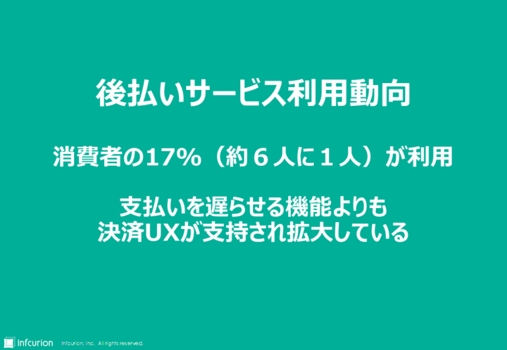
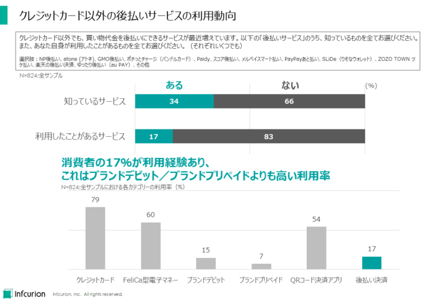
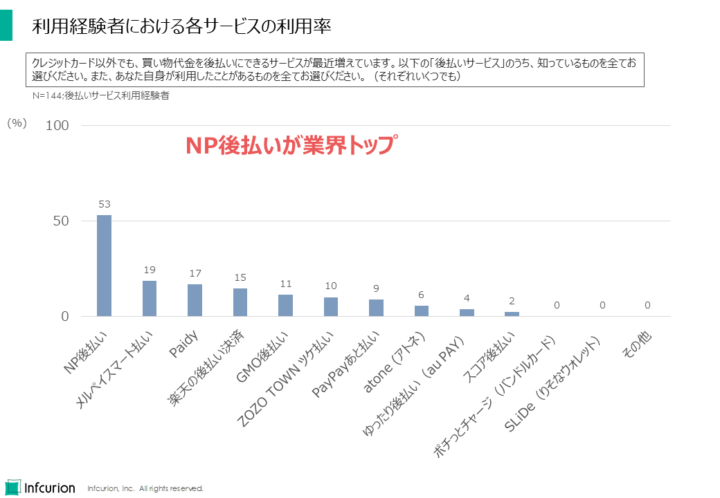
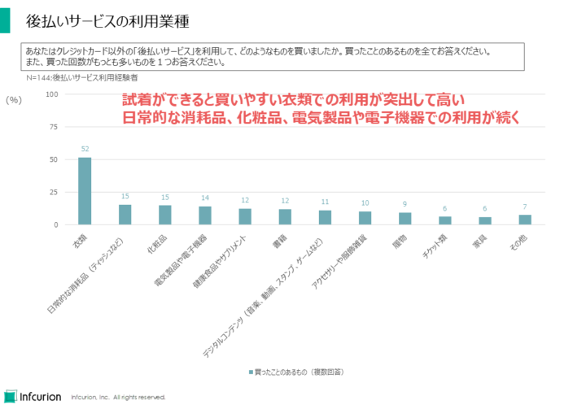
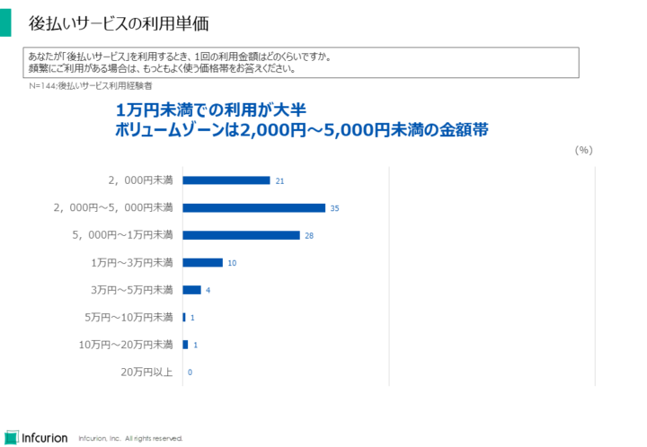
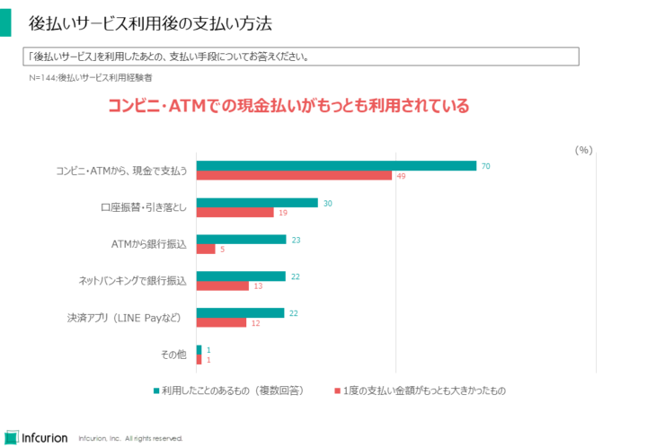
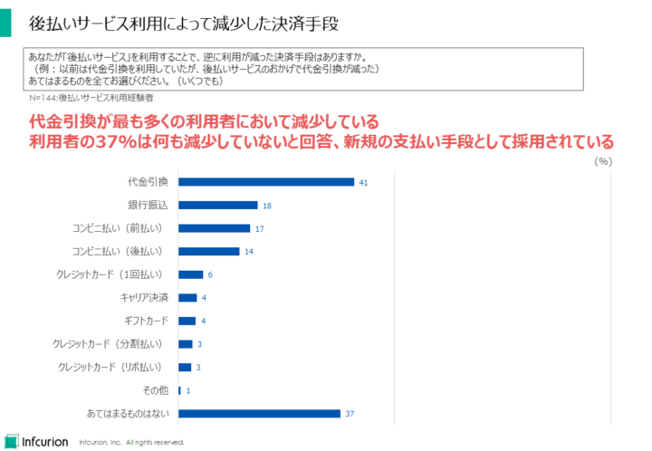
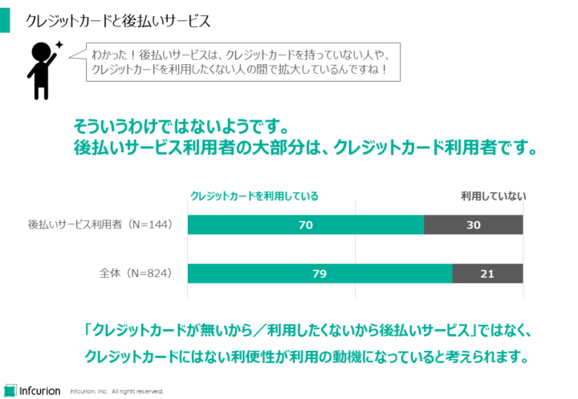
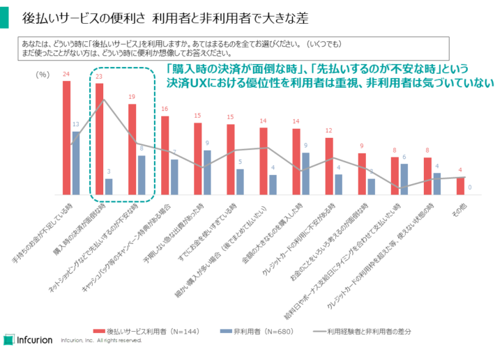

目次
拡大する後払いサービス（ＢＮＰＬ）市場
ネット経由の電子商取引（EC）領域において、「クレジットカードを使わなくとも後払いで購入できる」という後払いサービスが拡大しています。世界的には「Buy Now, Pay Later」を略して「BNPL」としても知られています。
以後、「後払いサービス」と「BNPL」は同義として使用します。
国内においても「ZOZOTOWN ツケ払い」、ネットプロテクションズ社の「NP後払い」、楽天の後払い決済など様々なBNPLがあります。国内BNPLに共通的な特徴は以下の３点です：
- クレジットカード決済インフラに依存せず独自に与信と回収を行うこと
- 利用限度は数万から10万円程度とクレジットカードより低く設定されていること
- 返済は2週間から2ヶ月程度での一括返済であること
BNPL市場は近年急速に拡大しており、国内でも推定市場規模は１兆円以上（※１）、世界的にも２０２５年には72.8兆円に達する（※２）と予想されています。
（※１）「協会設立のお知らせ」、 日本後払い決済サービス協会、2021年5月11日
（※２）「増加する｢後払い決済｣サービス。今後優位なビジネスモデルとは？：eMarketerレポート」、Business Insider Japan、2021年3月18日
国内外で市場拡大が見込まれる後払いサービスですが、その利用実態に関するデータは十分ではありません。そこで当社インフキュリオンでは、全国の16～69才の男女824人を対象に後払いサービスの利用実態を調査しました。今回はその概要を紹介したいと思います。
関連情報：
- 「インフキュリオン、「後払い決済サービス」に関する利用動向を調査 約6人に1人が利用経験あり、新たな決済手段として浸透」、インフキュリオン、2021年7月20日
利用実態のポイント

後払いサービス利用動向まとめ
- 後払いサービスの利用経験者は17%で、約6人に1人が利用経験あり。これは国際ブランドデビットカードや同プリペイドカードよりも高い利用率。
- 個別サービスの利用率はネットプロテクションズの「NP後払い」が最も高い。「メルペイスマート払い」「Paidy」が続く。
- 後払いサービス利用によって減少した決済手段は「代金引換」が41%と最も高い。しかし37%は「あてはまるものはない」と回答するなど新規の支払い手段として利用されていることがわかった。
- 後払いサービス利用者の70%はクレジットカードも利用しており、「クレジットカードを持たない人が利用している」というイメージは誤りであることがわかった。クレジットカードとは異なるユーザー体験（UX; User Experience）から後払いサービスが選択されており、今後も新しい決済手段として利用拡大が見込まれる。
約6人に1人が利用経験者

クレジットカード以外の後払いサービスの利用動向
まず後払いサービスのリストの中から、「利用したことのあるもの」「知っているもの」を全て選択してもらう設問では、１つ以上のサービスを「利用したことがある」と回答した人は17%、約6人に1人となりました。
これは、国際ブランドデビットカード（ブランドデビット）、同プリペイドカード（ブランドプリペイド）よりも高い利用率となっています。
34%の人は１つ以上のサービスを「知っている」と回答しており、約3人に1人は何等かの後払いサービスを知っていることがわかりました。
各サービスの利用率

利用経験者における各サービスの利用率
１つ以上の後払いサービスを「利用したことがある」と回答した144名における各サービスの利用率を図示しています。「NP後払い」が53%でトップ、「メルペイスマート払い」が19%で2位、それに「Paidy」17%と続きます。
後払いサービスの利用業種

後払いサービスの利用業種
利用経験者に「後払いサービスを利用して購入したことがあるもの」を回答してもらった結果が上図です。試着できると買いやすい「衣類」の購入での利用が突出して高いことがわかりました。
なお、これは国内だけの傾向ではなく、BNPL利用に関するグローバルで共通な特徴です。
後払いサービスの利用単価

後払いサービスの利用単価
後払いサービスの利用単価は「1万円未満」が大半で、最もよく利用される価格帯は「2,000円～5,000円未満」であることがわかりました。
利用後の支払い方法

後払いサービス利用後の支払い方法
利用後の支払い方法は「コンビニ・ATMでの現金払い」（70%）が最多となりました。
利用が減少した決済手段

後払いサービス利用によって減少した決済手段
後払いサービスを利用することで利用が減った決済手段は「代金引換」（41%）が最多でした。
37%は「あてはまるものはない」と回答し、新規の決済手段として利用されていることがわかりました。
クレジットカードと後払いサービス

クレジットカードと後払いサービス
「クレジットカードを持っていない人」、「クレジットカードを利用しない人」が後払いサービスに流れている、と巷ではよく言われます。しかし調査データではそのような事実は確認できませんでした。
後払いサービス利用経験者のうち、クレジットカード利用者は70%。後払いサービス利用者はクレジットカードも併用していることが示されました。
「クレジットカードが無いから／利用したくないから」という後ろ向きな動機ではなく、クレジットカードにはない利便性が利用の動機となっていると考えられます。
後払いサービスの便利さ

後払いサービスの便利さは、利用者と非利用者で認識が大きく異なる
「どういう時に後払いサービスを利用するか」と尋ねた結果が上図です。利用経験者だけでなく、非経験者にも同じ質問をしており、「便利さを想像してお答えください」としています。
利用経験者にとっての利用シーンは「手持ちのお金が不足している時」（24%）、「購入時の決済が面倒な時」（23%）、「ネットショッピングなどで先払いするのが不安な時」（19%）が上位となりました。
しかし非利用者のうちこれらの利用シーンを挙げたのは13%、3%、8%と利用経験者とは大きなギャップがありました。特に「購入時の決済が面倒な時に後払いサービス」という決済利便性に関する認識、そして「ネットショッピングで先払いすることへの不安」という決済安全性に関する認識のギャップは、後払いサービスの決済UXの優位性が利用者以外にはあまり知られていないという事実を浮き彫りにしました。


{kind=link}
{kind=link}
{kind=link}
{kind=link}
{kind=link}
{kind=link}
{kind=link}
{kind=link}
{kind=link}